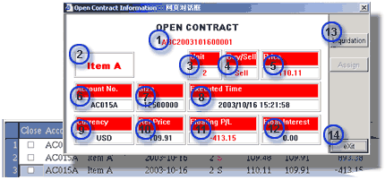

Open
Orders List
The
Open Order List contains all open position/s in the accounts of the user.
-
Close - a check box to enable user to select the contract for liquidation,
User may liquidate multiple contracts of the same instrument by checking the
Close and double mouse click the contract at the same time
-
Account - the
account of the contract
-
Item - the symbol of the trading instrument
-
Date - the trade day when the contract is established
-
Lot - trading quantity of the contract
-
B/S - B for Buying contract and S for Selling contract. All selling
orders will show red in color, and buying orders will be blue colored
-
Price - the contracted price of the open contract
-
Ref Price - the latest market price of the instrument. The price
is used for computation of the floating posiition/s of the contract
-
Floating P/L - the
amount of floating profit or loss for the contract expressed in the base/reporting
currency of the trading account
-
Interest - the amount of floating interest for the contract expressed
in the base/reporting currency of the trading account
Should
user require more information about a contract, he/she may double mouse click
at the desired order, the Information dialog contains the following information
will be shown:

Open Contract Information dialog
|
-
1. Contract no. - It is the unique identification of the contract
-
2. Item - the symbol of the trading instrument
-
3. Unit - the unit quantity of the contract
-
4. Buy/Sell - the buy/sell nature of the contract. Besides, when
the contract is a selling contract, red color will dominate the Information
dialog. When it is a buying order, blue will be taking place
-
5. Price - the contracted price of the contract
-
6. Account - the
account of the contract
-
7. Size - the unit size of the contract
-
8. Executed Time - the date and time when the order has been contracted
-
9. Currency - currency for the proft/loss of the contract
-
10 Ref Price - the latest market price of the instrument. The price
is used for computation of the floating posiition/s of the contract
-
11 Floating P/L - the
amount of floating profit or loss for the contract expressed in the base/reporting
currency of the trading account
-
12 Float Interest - the amount of floating interest for the contract
expressed in the base/reporting currency of the trading account
-
13 Liquidation - user may click the button if he/she wants to liquidate
the contract
-
14 Exit - user may click the button if he/she wants to close the
Information dialog